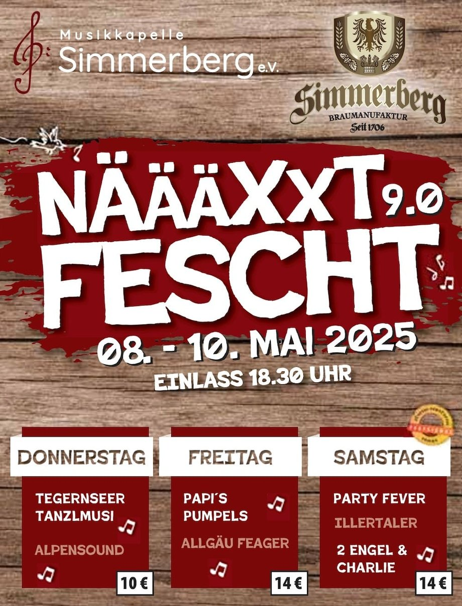
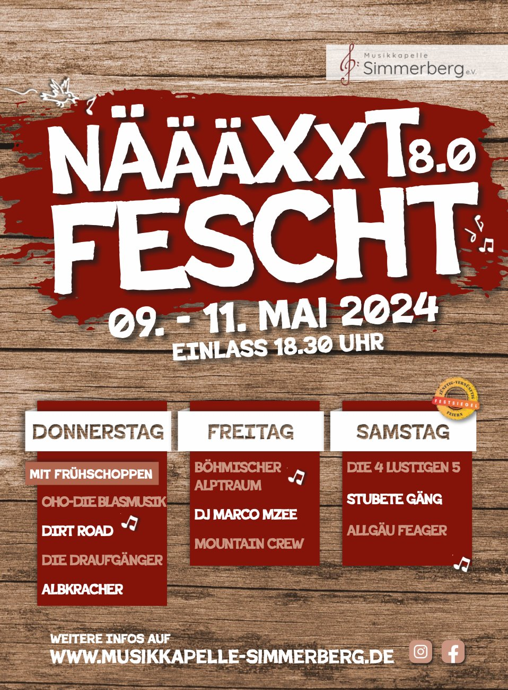
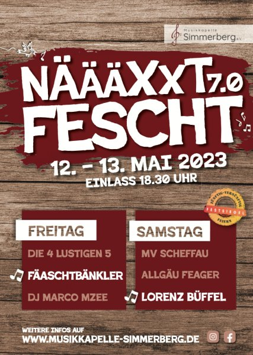
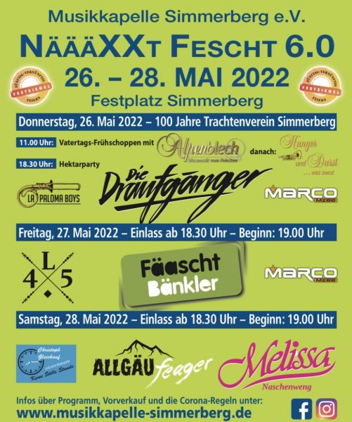
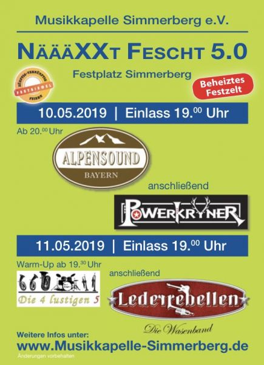
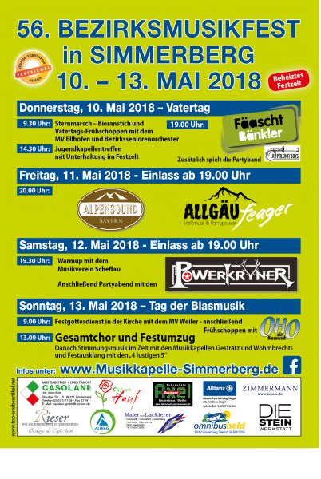
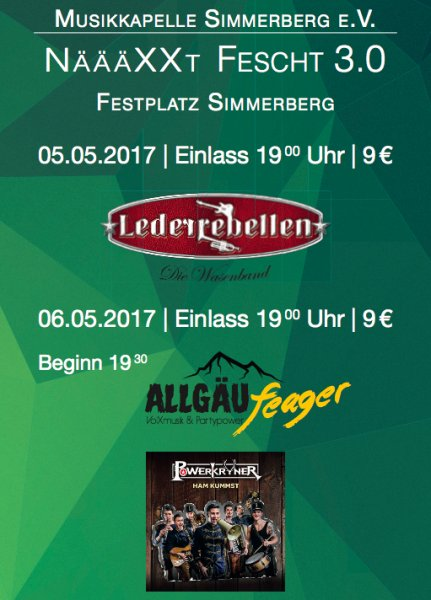
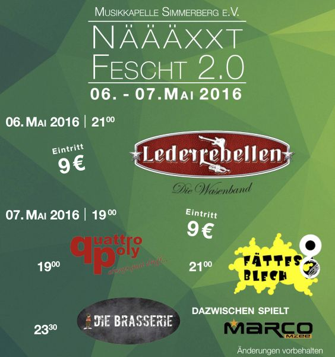
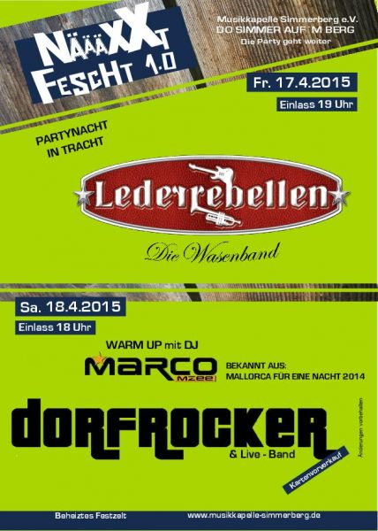

Archiv
Vergangenes
Über 10 Jahre Festzelt-Geschichte – von Näääxxt Fescht 1.0 bis heute.

Neueste Ausgabe
Näääxxt Fescht 9.0
08. – 10. Mai 2025
Donnerstag: Tegernseer Tanzlmusi · Alpensound
Freitag: Papi's Pumpels · Allgäu Feager
Samstag: Party Fever · Illertaler · 2 Engel & Charlie
Freitag: Papi's Pumpels · Allgäu Feager
Samstag: Party Fever · Illertaler · 2 Engel & Charlie

3-Tage-Programm
Näääxxt Fescht 8.0
09. – 11. Mai 2024
Donnerstag: OHO · Dirt Road · Die Draufgänger · Albkracher
Freitag: Böhmischer Alptraum · DJ Marco Mzee · Mountain Crew
Samstag: Die 4 Lustigen 5 · Stubete Gäng · Allgäu Feager
Freitag: Böhmischer Alptraum · DJ Marco Mzee · Mountain Crew
Samstag: Die 4 Lustigen 5 · Stubete Gäng · Allgäu Feager

2 Tage · Holz-Optik
Näääxxt Fescht 7.0
12. – 13. Mai 2023
Freitag: Die 4 Lustigen 5 · Fäaschtbänkler · DJ Marco Mzee
Samstag: MV Scheffau · Allgäu Feager · Lorenz Büffel
Samstag: MV Scheffau · Allgäu Feager · Lorenz Büffel

Comeback nach Corona
Näääxxt Fescht 6.0
26. – 28. Mai 2022 · Festplatz Simmerberg
Donnerstag: Alpenblech · Die Draufgänger · La Paloma Boys
Freitag: Die 4 Lustigen 5 · Fäaschtbänkler · DJ Marco Mzee
Samstag: Christoph Glassehner · Allgäu Feager · Melissa Naschenweng
Freitag: Die 4 Lustigen 5 · Fäaschtbänkler · DJ Marco Mzee
Samstag: Christoph Glassehner · Allgäu Feager · Melissa Naschenweng

Beheiztes Festzelt
Näääxxt Fescht 5.0
10. – 11. Mai 2019
Freitag: Alpensound · Powerkryner
Samstag: Die 4 Lustigen 5 · Lederrebellen
Samstag: Die 4 Lustigen 5 · Lederrebellen

4 Tage · Bezirksmusikfest
56. Bezirksmusikfest in Simmerberg
10. – 13. Mai 2018
Do: MV Ellhofen · La Paloma Boys · Fäaschtbänkler
Freitag: Bayern · Allgäu Feager
Samstag: MV Scheffau · Powerkryner
Sonntag: OHO · 4 Lustigen 5 · MK Wohmbrechts & Gestratz
Freitag: Bayern · Allgäu Feager
Samstag: MV Scheffau · Powerkryner
Sonntag: OHO · 4 Lustigen 5 · MK Wohmbrechts & Gestratz

Festplatz Simmerberg
Näääxxt Fescht 3.0
05. – 06. Mai 2017
Freitag: Lederrebellen
Samstag: Allgäu Feager · Powerkryner
Samstag: Allgäu Feager · Powerkryner

Eintritt 9 €
Näääxxt Fescht 2.0
06. – 07. Mai 2016
Freitag: Lederrebellen
Samstag: Quattropoly · Fättes Blech · Die Brasserie
DJ Marco Mzee
Samstag: Quattropoly · Fättes Blech · Die Brasserie
DJ Marco Mzee

Wo alles begann
Näääxxt Fescht 1.0
17. – 18. April 2015
Freitag: Lederrebellen
Samstag: DJ Marco Mzee · Dorfrocker
Samstag: DJ Marco Mzee · Dorfrocker
Weitere Highlights
Stimmungswettbewerb Seibranz
Rückblick und Ergebnisse vom Stimmungswettbewerb.